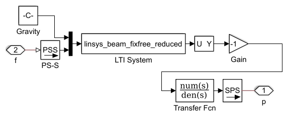

Cantilever Deflection With Reduced Order Model
This example shows a cantilever beam modeled using the state-space method. The beam can be loaded with a weight rigidly attached to the end or with a pendulum link.
Two state-space models can be used. One has all states that were present in the original model from which the state-space matrices were derived. The second is a reduced order model which has far fewer states. Under certain loading conditions, the reduced order model runs far faster than the original model with all the states.
Contents
Model
State-Space Model Subsystem
The state-space model takes forces as inputs and calculates the deflection of the cantilever beam. It takes two inputs - the first is the distributed load due to gravity, and the second is the force exerted on the tip of the beam due to the load.
Deflection Joint Subsystem
This subsystem contains a joint driven by a prescribed motion. The prescribed motion is the deflection calculated by the state-space model of the beam deflection. The joint acts to superimpose the deflection of the beam on the motion of the body to which it is attached.
Model Comparison: Beam Loaded with Rigidly Attached Weight
The plot below shows the comparison of the full state-space model and the reduced order model when the beam is loaded with a rigidly attached weight. The results are nearly identical, and the reduced order model runs noticeably faster.
Model Comparison: Beam Loaded with Pendulum
The plot below shows the comparison of the full state-space model and the reduced order model when the beam is loaded with a pendulum link. The results are nearly identical, and the reduced order model runs significantly faster.